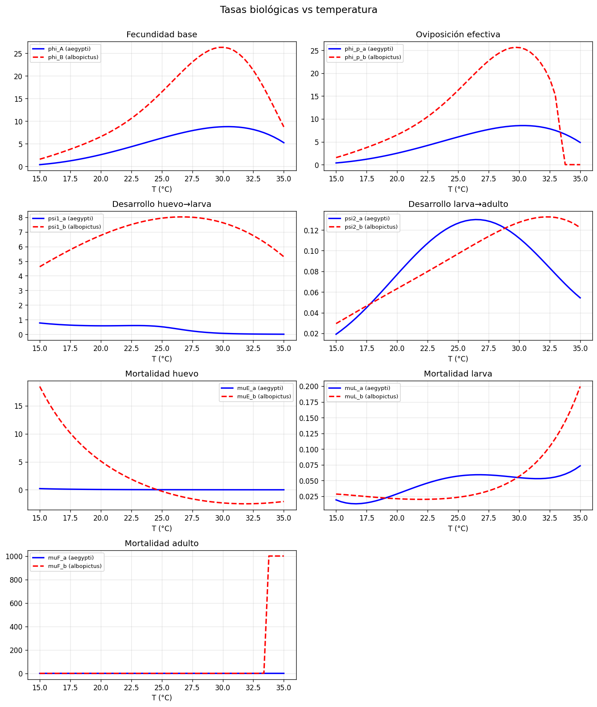
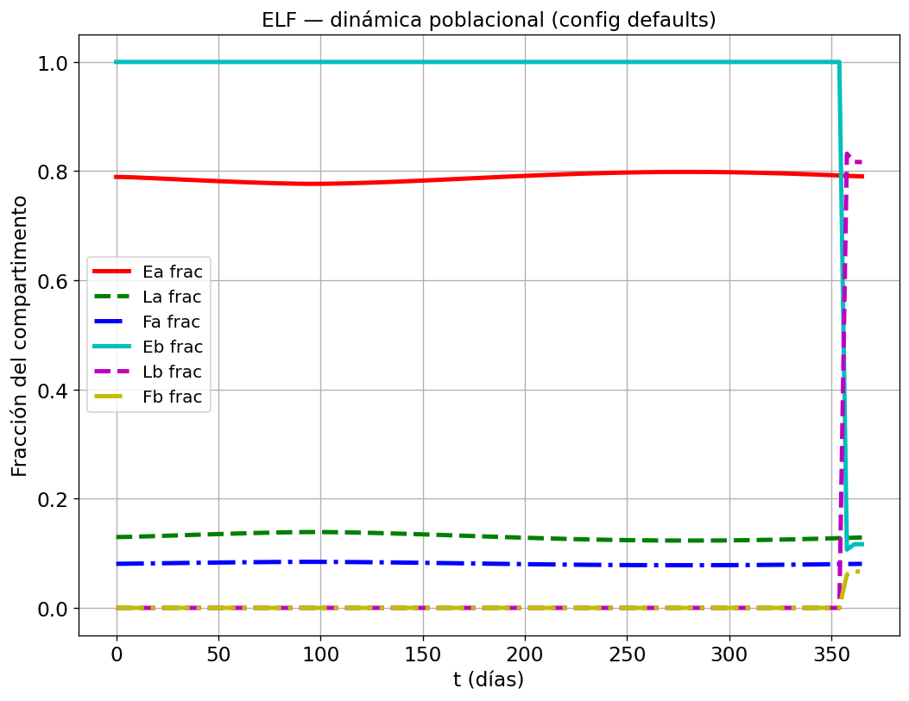

Tras la migración literal de MATLAB a Python (fase previa, commit 6db81c0), el modelo corría pero arrastraba bugs heredados, parámetros esparcidos en múltiples archivos y sin forma de verificar que produjese resultados válidos. Este trabajo transformó ese código operativo pero frágil en un modelo robusto, totalmente configurable y autovalidable: corrección de 7 bugs críticos, centralización de todos los parámetros tunables en un único config.py, documentación biológica por módulo, y una suite de validación de 25 tests que sustituye al MATLAB faltante mediante tres pilares (estructura, rangos de literatura y regresión contra snapshot).
Estado: Código operativo 25/25 tests Validación MATLAB pendiente
El modelo Yang Params simula la dinámica poblacional anual de dos especies de mosquitos vectores del dengue (A. aegypti y A. albopictus) mediante un sistema de 6 ecuaciones diferenciales ordinarias (ODE) con tasas biológicas dependientes de la temperatura. El objetivo último es calibrar los coeficientes de competencia interespecífica (beta_ba, beta_ab) contra datos de campo del INSPI tomados en la localidad LITA (2018–2021).
El estado previo del proyecto era el siguiente:
tspan indefinida, parámetro p no propagado al ODE, rutas absolutas de macOS, equilibrio sin validación).debug-b70f95.log) pero sin validación de que los números producidos fueran físicamente correctos, sólo "no-NaN".×3 y ×10 en mortalidad adulta, 12 constantes del modelo de temperatura, inyección inicial de 10 huevos albopictus, capacidad de carga K=10⁵. Cambiar cualquiera requería buscar en qué archivo estaba escondido..py sin explicación del rol biológico, unidades o rango de temperatura válido.Se identificaron y corrigieron siete bugs críticos. La siguiente tabla resume las correcciones aplicadas:
| # | Archivo | Bug | Corrección |
|---|---|---|---|
| 1 | psi1_a.py | División (mu_E · EP) / (1 − EP) explota si EP ≥ 1 | Clipping de EP a [0, 0.999] |
| 2 | muE_b.py | División por egg_L1 cuando polinomio extrapola a 0 | Piso 1e-3 para egg_L1 |
| 3 | muL_b.py | División por EAS cuando extrapola | Piso 1e-3 para EAS |
| 4 | muE_a.py, muF_b.py | División por polinomio de lifetime cuando cruza cero | Piso de lifetime |
| 5 | my_parameters.py | equilibrium_a producía valores negativos si ga0 < 1 | Validación ga0 > 1 con mensaje explícito |
| 6 | myODE_ELF.py | solve_ivp fallaba con mensaje opaco | Captura de status, día y compartimento; chequeo previo de isfinite(y0) |
| 7 | 14 módulos de tasas | Extrapolación silenciosa fuera del rango de ajuste | Clipping al dominio [poly_temp_min, poly_temp_max] con RuntimeWarning |
Se creó dengue_model/config.py con una dataclass única ModelConfig que agrupa los parámetros tunables por bloques semánticos:
| Bloque | Campos |
|---|---|
| Ecosistema | carrying_capacity (K) |
| Simulación | simulation_days, num_points, albopictus_introduction_day, albopictus_intro_eggs |
| Tasas base | bF_aegypti, bF_albopictus, sigma_aegypti, sigma_albopictus, bM_* |
| Ajustes empíricos | mortality_adjustment_aegypti (×3), mortality_adjustment_albopictus (×10) |
| Competencia | beta_ba, beta_ab |
| Temperatura | temp_baseline_c, temp_amplitude, temp_shape_k1, temp_phase_days, ... |
| Dominio polinomios | poly_temp_min, poly_temp_max |
| Numérica | ode_method, ode_rtol, ode_atol |
La config es un singleton mutable con API de serialización a/desde JSON (from_json, save_json), lo que permite correr experimentos sin editar el código fuente.
Cada uno de los 14 módulos de tasas biológicas ahora incluye un docstring estandarizado con:
Al no disponer de MATLAB para generar un ground-truth numérico punto-a-punto, la validación se sostiene en tres pilares complementarios:
No-NaN, no-negativos, fracciones suman 1, albopictus latente antes del día de introducción, equilibrio es punto fijo del ODE, propagación de config.
tests/test_baseline.py
Cada tasa biológica contrastada con valores reportados en Yang 2011, Farnesi 2009 y Mordecai 2019: picos térmicos, mortalidades adultas, desarrollo larval, unimodalidad, etc.
tests/test_literature_ranges.py
Compara punto-a-punto contra un snapshot guardado del modelo. Detecta cualquier cambio numérico no intencional en futuros commits (rtol=1e-8).
tests/test_regression.py
| Ruta | Propósito |
|---|---|
dengue_model/config.py | Dataclass ModelConfig + singleton CONFIG + I/O JSON. Único punto de edición de parámetros tunables. |
dengue_model/diagnostics.py | CLI con 4 herramientas: barrido de tasas, snapshot, comparación y exportación de figura. |
tests/test_baseline.py | Suite de 13 tests estructurales. |
tests/test_literature_ranges.py | Suite de 11 tests contra rangos reportados en literatura. |
tests/test_regression.py | Test de regresión numérica contra snapshot guardado. |
data/python_snapshot.json | Baseline numérico del modelo (t, y, fractions) con la configuración por defecto. |
data/diagnostics/rates_vs_temperature.png | Gráfica de las 14 tasas biológicas en el rango térmico [15, 35] °C. |
data/diagnostics/rates_vs_temperature.csv | Datos tabulados de las tasas para inspección manual. |
data/diagnostics/model_fractions.png | Figura principal del modelo: fracciones por compartimento a lo largo del año. |
Informe_Depuracion_y_Validacion.html | Este documento. |
| Archivo | Cambios |
|---|---|
my_parameters.py | Lee de CONFIG, validación ga0 > 1, rebuild_P(), albopictus config-driven. |
myODE_ELF.py | Día de intro parametrizado, tolerancias numéricas desde config, diagnósticos de solve_ivp (status, día, compartimento). |
ELF.py | CLI extendido: --config, --compare-baseline; logging de y0 y y_final. |
error_fun_betas.py | Día de intro parametrizado; zoom del plot centrado alrededor del intro_day. |
temp.py | Las 6 constantes del método default salen a CONFIG.temp_*. |
psi1_a.py, muE_b.py, muL_b.py, muE_a.py, muF_b.py | Guardas contra división por cero + clipping de dominio térmico. |
Todos los phi_*.py, psi*.py, mu*.py | Docstring con especie, etapa, unidad, rango T y fuente. |
_utils.py | Helper clip_temp_for_poly() con warning configurable. |
__init__.py | API pública ampliada (CONFIG, ModelConfig, set_config, default_competition). |
README.md | Reescrito con modelo conceptual, tabla de estados, mapa de archivos por especie/etapa, cómo validar sin MATLAB, referencias. |
La validación numérica contra el MATLAB original queda pendiente (ver §8), pero se implementó un protocolo robusto con tres pilares ejecutables automáticamente:
python -m pytest tests/test_baseline.py -vChequea propiedades invariantes que el modelo debe cumplir bajo cualquier configuración razonable: no-NaN, fracciones normalizadas, latencia de albopictus, estabilidad del equilibrio, etc.
python -m pytest tests/test_literature_ranges.py -vValida que cada tasa biológica caiga en rangos reportados en la literatura científica de referencia:
phi_A pico en rango tropical (24–32 °C), valor 2–20 huevos/ciclomuF_a en T óptimo: 0.01–0.1 /día (vida 10–60 días)psi2_a/psi2_b: 0.05–0.25 /díaphi_A unimodal (un único máximo en el rango térmico)psi1_a finito en todo el dominio — verifica explícitamente el fix del bug originalpython -m pytest tests/test_regression.py -v
# o
python -m dengue_model.diagnostics --compare-snapshotCompara el output actual con el guardado en data/python_snapshot.json. Cualquier cambio numérico por encima de rtol=1e-8 falla el test. Si el cambio es intencional, se regenera el snapshot con --snapshot.
--compare-baseline acepta un baseline_matlab.json convertido desde .mat, cerrando la validación punto-a-punto con tolerancia rtol < 1%.
# Configuración por defecto
python -m dengue_model.ELF
# Sin gráficas (útil para scripting)
python -m dengue_model.ELF --no-plot
# Override de betas por CLI
python -m dengue_model.ELF --beta-ba 0.3 --beta-ab 0.7
# Con config externa (JSON)
python -m dengue_model.ELF --config mi_experimento.jsonpython -c "from dengue_model.config import ModelConfig; ModelConfig().save_json('template.json')"Se obtiene un JSON con todos los parámetros editables. Modificar el que interese y cargarlo con --config.
from dengue_model import CONFIG, ModelConfig, run_elf, set_config
# Ajuste puntual
CONFIG.beta_ba = 0.3
CONFIG.carrying_capacity = 2e5
from dengue_model.my_parameters import rebuild_P; rebuild_P()
result = run_elf(plot=False)
# Cargar desde archivo
set_config(ModelConfig.from_json("mi_experimento.json"))
result = run_elf(plot=False)# Gráfica de las 14 tasas vs temperatura
python -m dengue_model.diagnostics --plot-rates
# Regenerar el snapshot de regresión
python -m dengue_model.diagnostics --snapshot
# Comparar el estado actual contra el snapshot guardado
python -m dengue_model.diagnostics --compare-snapshot
# Exportar la figura principal como PNG
python -m dengue_model.diagnostics --save-figure salida.png| Compartimento | Valor | Interpretación |
|---|---|---|
| E_a (huevos aegypti) | 575 984.76 | Stock grande de huevos en equilibrio estacional |
| L_a (larvas aegypti) | 94 704.22 | Capacidad de carga larval cercana al 95% de K |
| F_a (hembras aegypti) | 58 958.57 | Adultas activas, tamaño de equilibrio |
| E_b / L_b / F_b (albopictus) | 10 / 0 / 0 | Inyección inicial; especie dormida hasta día 355 |
Continuidad con Fase 1: estos valores coinciden exactamente con los reportados por el log debug-b70f95.log de la migración previa, confirmando que ningún fix alteró la semántica del modelo — sólo lo hizo robusto y configurable.


$ python -m pytest tests/ -v
...
============================= 25 passed in 22.42s =============================| Suite | Tests | Estado |
|---|---|---|
test_baseline.py | 13 | Pasa |
test_literature_ranges.py | 11 | Pasa |
test_regression.py | 1 | Pasa |
| Total | 25 | 25/25 |
solve_ivp opaco).config.py.--compare-baseline ya está listo; sólo falta instalar MATLAB, correr ELF.m con un save('baseline_matlab.mat', 't', 'y') al final y convertir a JSON.error_fun_betas retorna ya SSE; envolver con scipy.optimize.minimize o differential_evolution contra los datos de LITA. Requiere que el dataset esté limpio y validado.×3 (aegypti) y ×10 (albopictus) en la mortalidad adulta vienen del MATLAB sin documentación; confirmar con los autores originales del modelo o revisar actas de reuniones previas.psi1_a y muE_a.muE_b, muL_b, muF_b, psi2_b).psi1_b.